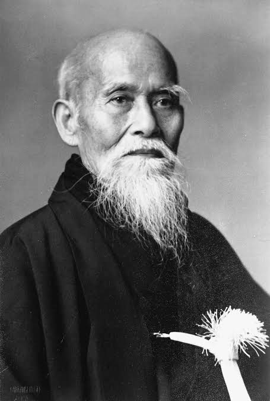

CÁC HUẤN LUYỆN VIÊN
Giới thiệu về Aikido Aishinkan
Aikido là một môn võ thuật hiện đại của Nhật Bản, được sáng lập bởi Morihei Ueshiba vào đầu thế kỷ 20. Tên "Aikido" có nghĩa là "con đường hòa hợp với năng lượng", trong đó "Ai" là hòa hợp, "Ki" là năng lượng hoặc sức mạnh của vũ trụ, và "Do" là con đường hoặc cách thức. Aikido tập trung vào việc sử dụng sức mạnh và động lực của đối thủ để kiểm soát và hóa giải các cuộc tấn công mà không cần sử dụng vũ lực quá mạnh.
Aishinkan là tên của một nhánh hoặc tổ chức trong Aikido. Cái tên "Aishinkan" có thể được phân tích thành các phần: "Ai" nghĩa là hòa hợp, "Shin" nghĩa là tâm hoặc tinh thần, "Kan" nghĩa là nơi, hoặc nhà. Như vậy, Aishinkan có thể được hiểu là "nơi của sự hòa hợp về tinh thần" hoặc "nhà của tinh thần hòa hợp". Các tổ chức hoặc trường phái Aikido với tên gọi này thường nhấn mạnh vào việc rèn luyện cả về kỹ thuật và phát triển tinh thần thông qua các giá trị hòa bình, lòng nhân ái và sự hòa hợp trong tập luyện.
Lịch sử môn võ
Aikido là một môn võ thuật hiện đại của Nhật Bản, do Morihei Ueshiba sáng lập vào đầu thế kỷ 20. Ueshiba (1883-1969) đã nghiên cứu nhiều môn võ cổ truyền khác nhau như Jujitsu, Kenjutsu, và Daito-ryu Aiki-jujutsu, sau đó kết hợp những yếu tố tinh hoa của chúng với triết lý cá nhân về hòa bình và tâm linh để tạo ra Aikido.
Quá trình phát triển
- Nền tảng võ thuật: Morihei Ueshiba học Daito-ryu Aiki-jujutsu từ Sokaku Takeda, một trong những võ sư hàng đầu Nhật Bản thời đó. Ông cũng rèn luyện kiếm đạo (Kenjutsu) và võ đạo Nhật Bản cổ truyền (Kobudo).
- Ảnh hưởng tâm linh: Ueshiba bị ảnh hưởng sâu sắc bởi tôn giáo Omotokyo, một tôn giáo Thần đạo mới có triết lý về hòa hợp và không bạo lực. Điều này giúp hình thành triết lý của Aikido: hòa hợp thay vì đối đầu.
- Hình thành Aikido: Trong những năm 1920-1930, Ueshiba bắt đầu phát triển phong cách võ thuật riêng, dựa trên nguyên tắc dùng sức mạnh của đối thủ để khắc chế, thay vì dùng lực để chống lại. Điều này khác biệt với nhiều môn võ khác và nhấn mạnh sự hòa hợp, kiểm soát thay vì tấn công trực diện.
- Phổ biến và phát triển: Sau Thế chiến II, Aikido dần trở nên pdhổ biến ở Nhật Bản và trên toàn thế giới. Năm 1948, tổ chức Aikikai được thành lập để truyền bá và quản lý Aikido toàn cầu. Hiện nay, Aikido có mặt tại hàng chục quốc gia và là một trong những môn võ có hệ thống đào tạo rộng lớn.
Triết lý và mục tiêu
Triết lý và kỹ thuật: Aikido không tập trung vào việc đánh bại đối thủ mà là sử dụng kỹ thuật để bảo vệ cả bản thân và đối thủ, tránh gây thương tổn không cần thiết. Các kỹ thuật trong Aikido bao gồm các đòn ném (nage-waza), khóa khớp (katame-waza), và di chuyển để làm mất cân bằng đối thủ.
Môn võ này không có các cuộc thi đấu đối kháng, vì mục tiêu của Aikido là rèn luyện tinh thần và thể chất, không phải để chiến thắng người khác mà là chiến thắng chính mình.